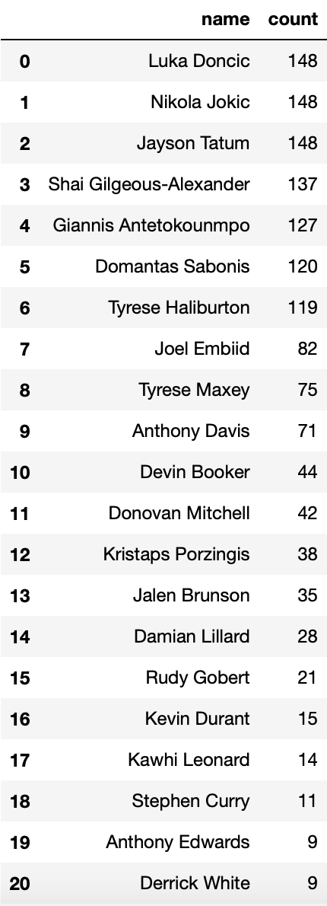
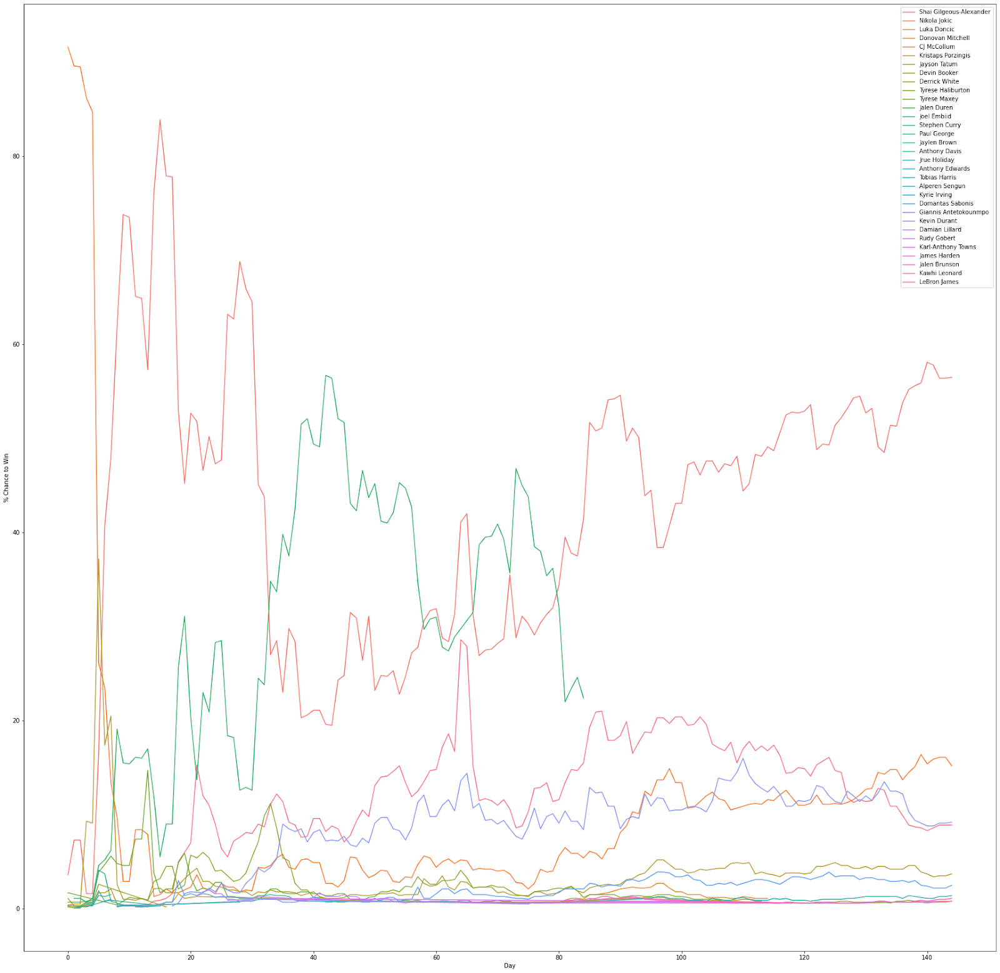

An Analysis of Basketball Reference's MVP Tracker
By Rohan Venkateswaran | September 11, 2018
Background
A very interesting part of Basketball Reference is the Frivolities section, where they have pages that house information beyond the statistics present on the player or team pages. One such page is the NBA MVP tracker, where they list the 10 players whom they think have the highest chance to win the award in a season and the probabilities of it happening. Now, I would assume they are running a regression in the background that takes in various metrics and spits out these probabilities but, unlike their Hall of Fame probability tracker, there is no formula available publicly to my knowledge. It does seem to be quite accurate though, with its only misses in recent years being 2017 when it predicted James Harden over Russell Westbrook and 2023 when it predicted Nikola Jokić over Joel Embiid.
Curious, I became interested in seeing how the tracker evolved over the season, what types of players it favored, and how much it cared about team records. So, every day of the 2023-24 NBA season, I took a screenshot of the top 10 players according to the MVP tracker and put them into a dataset with their probabilities. Since many of these screenshots were on my phone, data entry was manual so I did not record anything else like stats, and I also missed around 4 days worth of screenshots in the season. One thing to note is that, if a player was mathematically ineligible from getting the award due to the 65 games played limit instituted this season, he was removed from the list entirely.
The results are quite interesting though and they seem to mostly mirror the actual voting. The top 5 players on the final day were the same 5 who made the All-NBA First Team and, out of the next 5, 3 made it to the Second Team and 2 to the Third Team.
Analysis
Looking at trends, however, allows us to see which players were dominating the entire season.
This table shows the 21 players who were on the list at least 9 days in the season. Luka Dončić, Jokić, and Jayson Tatum were on the list every day of tracking, which highlights how dominant they were the entire season. In addition, the fact that Embiid is so high up despite missing 43 games in the season underlines how good his season was when he was healthy.
The presence of Kristaps Porzingis and Derrick White and also Anthony Edwards and Rudy Gobert gives some insight into how the model works; it really seems to value wins but it also tends to like stat sheet stuffers, explaining why Jaylen Brown and Karl-Anthony Towns only appeared on the list twice each all season despite both players being voted all-stars. This is further corroborated by the fact that James Harden appeared on the list before Kawhi Leonoard despite having his lowest scoring season since his sophomore year. Eventually, Leonard overtook him, but it was certainly interesting to see Harden show up first.
This year’s MVP race was perhaps one of the closest in the past few years before Jokić pulled away with the award at the end of the season, his competitors being Dončić, Shai Gilgeous-Alexander, and Giannis Antetokounmpo.
While he was healthy, Embiid was considered the overwhelming favorite. The data seems to agree with this sentiment, with Embiid dominating the chart for the most part of days 40 to 80. What is intriguing is that it thinks that the race was not close at all once he got injured; Jokić has over half the percentage share every day after day 100.
Conclusion
It seems as though Basketball Reference’s MVP tracker model tends to really value stat sheet stuffing players on winning teams. I would also posit that it weights efficiency relatively highly as it is a common characteristic among every player who ended up in the final top 10. Overall, this was a pretty fruitful project; it was quite satisfying to see the dataset slowly build itself throughout the season. Here is the final line plot of every player who appeared on the list from day 3 (when every team had played) to day 148:
Further Analysis
As the season goes on, the sample size of games played for a player gets larger, making his position on the list more significant. It could be a good idea to take this into account and weigh each successive day more to display a player’s dominance throughout the season. For instance, LeBron James appeared twice on the list all year, but the second time was the last day of the season, meaning that he ranked on it when it mattered the most. We cannot say that he had a bad season just by looking at how often he was in the top 10 because of this. It would also be interesting to record more stats in the daily collection process–ideally with the help of a scraper–to potentially recreate the model.